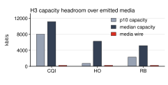
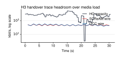

supported
The current test video (ball-720p30) sends nowhere near enough data to use up the bandwidth in the 5G recordings, so any controller comparison on those recordings is not yet meaningful.
every_5g_recording_has_at_least_10x_more_capacity_than_the_camera_actually_sendson_every_recording_fewer_than_15_percent_of_100ms_windows_drop_below_1mbps_of_actual_sent_bytes| Outcome | Predicates |
|---|---|
| Supported when all |
every_5g_recording_has_at_least_10x_more_capacity_than_the_camera_actually_sendson_every_recording_fewer_than_15_percent_of_100ms_windows_drop_below_1mbps_of_actual_sent_bytes
|
| Refuted when any |
no_recording_passes_either_check
|
| Inconclusive when any |
some_recordings_pass_only_one_check
|
| Untested when any |
required_records_missing
|


| experiment | config_id | label | algorithm | network | observed_wire_kbps | min_kbps | p10_kbps | median_kbps | mean_kbps | max_kbps | median_headroom | p10_headroom | bins_below_1000_kbps_pct |
|---|---|---|---|---|---|---|---|---|---|---|---|---|---|
| scream-vs-gcc-mahimahi-5g-cqi | 55 | SCReAM | scream | mahimahi-5g-cqi-100ms | 218.5 | 3,600.0 | 8,016.0 | 11,160.0 | 14,274.2 | 40,560.0 | 51.08 | 36.69 | 0.000 |
| scream-vs-gcc-mahimahi-5g-cqi | 56 | GCC | gcc | mahimahi-5g-cqi-100ms | 230.2 | 3,600.0 | 8,016.0 | 11,160.0 | 14,274.2 | 40,560.0 | 48.48 | 34.82 | 0.000 |
| scream-vs-gcc-mahimahi-5g-ho | 57 | SCReAM | scream | mahimahi-5g-ho-100ms | 223.6 | 1.00 | 720.0 | 6,240.0 | 7,234.4 | 27,000.0 | 27.91 | 3.22 | 11.48 |
| scream-vs-gcc-mahimahi-5g-ho | 58 | GCC | gcc | mahimahi-5g-ho-100ms | 231.4 | 1.00 | 720.0 | 6,240.0 | 7,234.4 | 27,000.0 | 26.96 | 3.11 | 11.48 |
| scream-vs-gcc-mahimahi-5g-rb | 59 | SCReAM | scream | mahimahi-5g-rb-100ms | 215.1 | 1.00 | 2,280.0 | 5,160.0 | 5,530.2 | 11,400.0 | 23.99 | 10.60 | 3.28 |
| scream-vs-gcc-mahimahi-5g-rb | 60 | GCC | gcc | mahimahi-5g-rb-100ms | 230.9 | 1.00 | 2,280.0 | 5,160.0 | 5,530.2 | 11,400.0 | 22.35 | 9.88 | 3.28 |
SCReAM vs GCC at 720p30 across the full 5G Mahimahi cqi trace. No retransmission and no latency budget enforcement; intended as an H1-style capacity-following comparison under realistic time-varying capacity.
SCReAM vs GCC at 720p30 across the full 5G Mahimahi ho trace. No retransmission and no latency budget enforcement; intended as an H1-style capacity-following comparison under realistic time-varying capacity.
SCReAM vs GCC at 720p30 across the full 5G Mahimahi rb trace. No retransmission and no latency budget enforcement; intended as an H1-style capacity-following comparison under realistic time-varying capacity.
wire_bytesencoded_bitrateframe_countThis page is generated from specs/hypotheses/h3.yaml + analysis/hypotheses/results/h3_report.json + figures under analysis/hypotheses/results/.
python3 analysis/hypotheses/build_reports.py python3 analysis/hypotheses/build_pages.py python3 analysis/hypotheses/h3_media_workload_calibration.py
Source: Project-internal validity check for 5G-recording SCReAM / GCC experiments